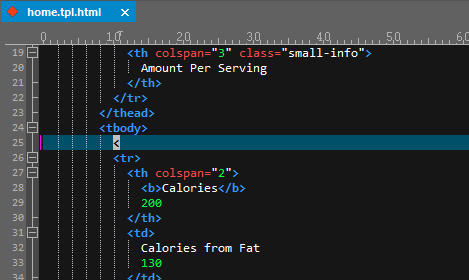
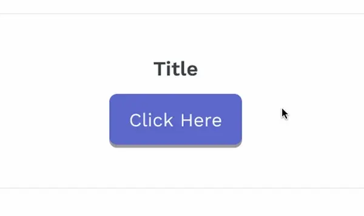
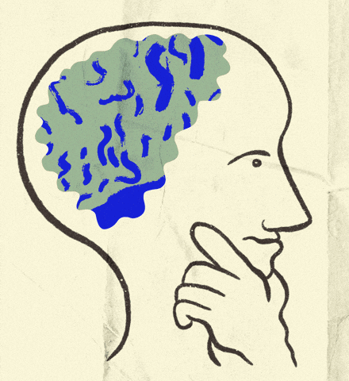

Bitácora
Ideas Principales
- HTML crea páginas web.
- HTML significa HyperText Markup Language.
- HTML5 incluye audio y video.
- Los atributos cambian el comportamiento de las etiquetas.
Apuntes de la Clase
- La estructura básica es
<html>, <head>, <body>.
- Etiquetas comunes son
<h1> a <h6>, <p>, <div>, <span>, <a>, <img>.
- Usar
<img> con el atributo src para imágenes.
- Crear enlaces con
<a> y usar href.
- Comentarios en HTML:
<!-- comentario -->.

Ideas Principales
- Organiza el texto en párrafos, encabezados y listas.
- Usar
<strong> y <em> para resaltar texto.
- Mejora la comprensión con texto resaltado.
- Listas bien estructuradas ayudan a navegar.
- Elige listas ordenadas o desordenadas según el caso.
Apuntes de la Clase
- Usar
<p> para párrafos y <h1> a <h6> para encabezados.
<strong> y <em> resaltan texto.- Crear listas ordenadas (
<ol>) y desordenadas (<ul>).
- Crear enlaces a otras partes del documento con anclas.
- Anclas con
<a href="#ancla">Texto del enlace</a>.
Ideas Principales
- Optimiza imágenes para tiempos de carga más rápidos.
- Usar formatos adecuados (jpg, png, gif).
- Imágenes relevantes mejoran el contenido.
- Usar
alt para accesibilidad.
- Elegir formato adecuado (JPEG o PNG) según el uso.
Apuntes de la Clase
- Insertar imágenes con
<img>.
- Forma básica:
<img src="ruta-de-la-imagen" alt="Descripción">.
- El atributo
src indica la ubicación de la imagen.
- El atributo
alt es para accesibilidad y se muestra si no carga la imagen.
- Usar
width y height para ajustar el tamaño.
Ideas Principales
- Crear enlaces internos con anclas.
- Los enlaces deben ser descriptivos.
target="_blank" abre el enlace en nueva pestaña.- Los enlaces deben ser fáciles de identificar.
Apuntes de la Clase
- Los enlaces permiten navegar entre páginas o secciones.
- Crear hipervínculos con
<a>.
- Forma básica de un enlace:
<a href="url">Texto</a>.
- Para enlazar a una sección:
<a href="#ancla">.
- El atributo
target define cómo abrirá el enlace.
- El texto del enlace debe ser claro para el usuario.

Ideas Principales
- CSS da estilo a las páginas HTML.
- Usa selectores para aplicar estilos a elementos.
- Las hojas de estilo pueden ser externas o internas.
- Con CSS puedes cambiar colores, fuentes y layout.
Apuntes de la Clase
- Forma básica de CSS:
selector { propiedad: valor; }.
- Usar
color, background-color, font-size.
- Usar clases (
.) y ID (#) para seleccionar elementos.
- Las hojas de estilo pueden estar en la misma página o ser archivos separados.
- Incluir CSS en HTML:
<link rel="stylesheet" href="estilos.css">.

Ideas Principales
- El proceso de diseño web incluye investigar, planear y desarrollar.
- Hacer wireframes es importante para ver cómo se verá el diseño.
- El diseño debe centrarse en el usuario y ser fácil de usar.
- Prototipar ayuda a recibir comentarios antes de terminar el desarrollo.
- Es clave hacer pruebas y ajustes para que el producto funcione bien.
- Documentar lo que se hace es útil para futuras mejoras.
Apuntes de la Clase
- Primero, se identifican las necesidades y los objetivos del sitio.
- Investigar ayuda a conocer al público que usará el sitio.
- Fase de Análisis del Proyecto:
- ¿Para qué se necesita el sitio web?
- ¿Qué buscarán los usuarios aquí?
- ¿Qué servicios interactivos se agregarán? (como formularios de contacto)
- ¿Qué imagen queremos dar a los usuarios?
- ¿Qué impacto tendrá el sitio en ellos?
- Información del Usuario:
- Es importante saber su nivel socioeconómico, sexo, edad y ocupación.
- También hay que considerar sus hábitos de consumo y motivaciones.
- Benchmarking:
- Analizar 5 páginas similares para ver sus objetivos y qué tan efectivas son.
- Revisar si son fáciles de navegar y si el contenido está bien organizado.
- Modelado del Usuario:
- Crear "personas" y escenarios para entender mejor a los usuarios.
- Diseño Conceptual:
- Hacer bocetos o sketches para planificar visualmente el diseño.
- Diseño Visual:
- Crear maquetas que muestren cómo se verá el sitio final.
